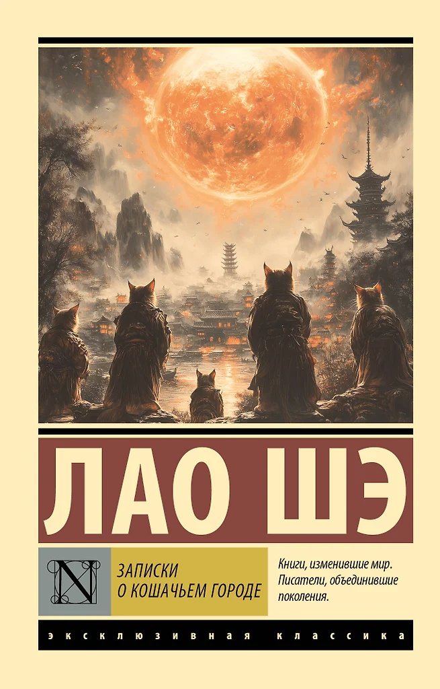

Записки о Кошачьем городе


Лао Шэ
Одним из самых известных сочинений Лао Шэ является фантастический роман «Записки о Кошачьем городе». В результате кораблекрушения главный герой, единственный выживший член экипажа, оказывается на Марсе, населенном антропоморфными кошками. Их цивилизация, насчитывающая более двадцати тысяч лет, некогда могучая и величественная, ныне пребывает в упадке. Землянин знакомится с молодыми и старыми кошками, учеными, политиками и крестьянами, предпринимает попытки перевоспитать кошек, но в конце концов становится свидетелем последних дней существования Кошачьего государства... Книга является аллегорией на китайское общество начала ХХ века, через описание вымышленного государства Лао Шэ критикует социальные и политические проблемы Китая.
₽ 3599.99
₽ 3999.99